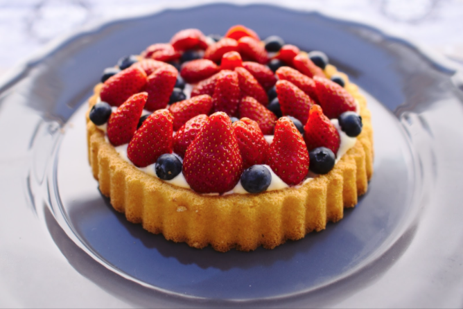

The Cooking Ranch
About
Recipes
Contact
Log-In
Farm To Table Fresh
Cranberry-Orange Scones
These Cranberry Orange Scones are a delightful addition to any breakfast or brunch menu – especially during the holidays! Cranberries and lots of orange zest add an irresistible freshness to these easy to make scones.
Creme Brulee
This incredible Crème Brûlée looks fancy, but is quick and easy to make! This dessert has creamy custard filling and a caramelized sugar topping. Top Crème Brûlée with fresh berries for a delicious show-stopping dessert.
Fruit Tart
Highlight the season's best fruit by making this easy fruit tart. The shortbread-like crust is a press in crust, which makes it no-fuss and stress-free. The filling is light, slightly tart, and just sweet enough. As for the fruit, use in season fruit and go for your favorites!

Churros
In my opinion Churros are one of the worlds best desserts. These are hands down the best churros I’ve ever had. They’re crispy on the outside, soft and tender on the inside and they have a flavor no one can resist!
Brownies
Worlds best fudgiest brownies is my best brownie recipe! Perfect crisp crackly top, super fudgy centre, chewy or gooey in all the right places, studded with melted chunks of chocolate.
Vegan Pumpkin Spice Cookies
These are hands down the best vegan pumpkin cookies ever! Soft, bakery style pumpkin cookies with a tangy and sweet white frosting that tastes like cream cheese frosting (with no cream cheese!). Best of all, they’re easy to make in 1 bowl.